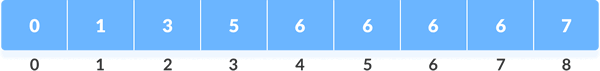
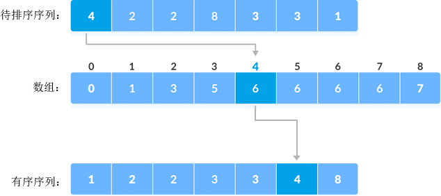

首页 > 编程笔记
计数排序算法
通过统计序列中各个元素出现的次数，完成对整个序列的升序或降序排序，这样的排序算法称为计数排序算法。
接下来，我们为您系统地讲解计数排序算法。
1) 找到序列中的最大值（用 max 表示）。对于 {4, 2, 2, 8, 3, 3, 1} 序列来说，最大值是 8。
2) 创建一个长度为 max+1、元素初值全部为 0 的数组（Python 中可以使用列表），为数组中 [1,max] 区域内的各个空间建立索引：
找到序列中的最小值（用 min 表示），作为数组下标为 1 的存储空间的索引；


4) 进一步加工数组中存储的数据。从数组下标为 1 的位置开始，按照如下公式修改数组中存储的元素：
5) 遍历待排序列中的元素，以该元素为索引获取数组中存储的值，此值即为序列排序后元素应处的位置。
举个例子，序列中第一个元素是 4，数组中索引 4 对应的值为 6，因此序列排序后元素 4 位于第 6 的位置处，如下图所示：
6) 当确定了一个元素排序后的位置，需要将数组中该元素为索引对应的值减去 1。
例如，我们已经确定了第二个元素 2 在有序序列中位于第 2 个位置，此时将数组下标为 2 处的值减去 1（3-1=2），则数组中第 3 个元素 2 位于有序序列中第 1 的位置上。
以上 6 步就是计数排序算法的整个实现思路，对应的时间复杂度为
结合伪代码，如下是采用计数排序算法对 {4, 2, 2, 8, 3, 3, 1} 进行升序排序的 C 语言程序：
如下是采用计数排序算法对 {4, 2, 2, 8, 3, 3, 1} 进行升序排序的 Java 程序：
如下是采用计数排序算法对 {4, 2, 2, 8, 3, 3, 1} 进行升序排序的 Python 程序：
以上程序的输出结果均为：
接下来，我们为您系统地讲解计数排序算法。
计数排序算法的实现思路
假设待排序序列为 {4, 2, 2, 8, 3, 3, 1}，使用计数排序算法完成升序排序的过程为：1) 找到序列中的最大值（用 max 表示）。对于 {4, 2, 2, 8, 3, 3, 1} 序列来说，最大值是 8。
2) 创建一个长度为 max+1、元素初值全部为 0 的数组（Python 中可以使用列表），为数组中 [1,max] 区域内的各个空间建立索引：
找到序列中的最小值（用 min 表示），作为数组下标为 1 的存储空间的索引；
- 将 max 作为数组下标为 max 的存储空间的索引；
- 将 max-1 作为数组下标为 max-1 的存储空间的索引；
- 将 max-2 作为数组下标为 max-2 的存储空间的索引；
- ......
本例中，待排序的元素都是整数，可以直接将数组下标作为各个存储空间的索引，如下图所示。为某个存储空间建立索引，其实就是为这个存储空间贴上一个独一无二的标签，借助索引（标签），我们可以快速地找到此空间并访问内部的数据。
3) 统计待排序序列中各个元素的出现次数，存储到以该元素为索引的数组空间中。例如，待排序序列中元素 2 出现了两次，所以索引（下标）为 2 的数组空间中存储 2 。更新后的数组如下图所示：对于长度为 max+1 的数组，计数排序算法的实现过程不会用到下标为 0 的数组空间。
4) 进一步加工数组中存储的数据。从数组下标为 1 的位置开始，按照如下公式修改数组中存储的元素：
array[i] = array[i-1] + array[i]
其中 i 的取值范围是 [1, max]，修改后的数组为：

5) 遍历待排序列中的元素，以该元素为索引获取数组中存储的值，此值即为序列排序后元素应处的位置。
举个例子，序列中第一个元素是 4，数组中索引 4 对应的值为 6，因此序列排序后元素 4 位于第 6 的位置处，如下图所示：

6) 当确定了一个元素排序后的位置，需要将数组中该元素为索引对应的值减去 1。
例如，我们已经确定了第二个元素 2 在有序序列中位于第 2 个位置，此时将数组下标为 2 处的值减去 1（3-1=2），则数组中第 3 个元素 2 位于有序序列中第 1 的位置上。
以上 6 步就是计数排序算法的整个实现思路，对应的时间复杂度为
O(n)。
计数排序算法的具体实现
实现计数排序算法的伪代码如下：
//计数排序算法，list 为待排序序列
countingSort(list)
size <- len(list) // 获取 list 序列中的元素个数=
max <- getMax(list) // 找到 list 序列中的最大值
array[0...max+1] <- 0 // 定义一个长度为 max+1 的数组，
for j <- 0 to size // 创建 array[max+1] 并统计各个元素的出现次数
array[list[j]] <- array[list[j]] + 1
for i <- 1 to max // 对 array[max+1] 存储的元素做累加操作
array[i] <- array[i] + array[i - 1];
for j <- size to 0 // 根据 array[max+1] 中的累加值，找到各个元素排序后的具体位置
output[array[list[i]] - 1] = list[i]; // output存储有序序列
array[list[i]] <- array[list[i]] - 1 // 确定一个元素的位置后，array[max+1] 中相应位置的数值要减 1
return output[size]
结合伪代码，如下是采用计数排序算法对 {4, 2, 2, 8, 3, 3, 1} 进行升序排序的 C 语言程序：
#include <stdio.h>
#define N 7 //待排序序列中的元素个数
#define MAX 100 //待排序序列中的最大值不能超过 100
//找到数组中的最大值
int getMax(int list[]) {
int i, max = list[0];
for (i = 1; i < N; i++) {
if (list[i] > max)
max = list[i];
}
return max;
}
void countingSort(int list[]) {
int i;
//第 1 步，找到序列中的最大值
int max = getMax(list);
//第 2 步，创建一个数组，长度至少为 max+1，并初始化为 0
int array[MAX] = { 0 };
int output[N] = { 0 };
//第 3 步，统计各个元素的出现次数，并存储在相应的位置上
for (i = 0; i < N; i++) {
array[list[i]]++;
}
//第 4 步，累加 array 数组中的出现次数
for (i = 1; i <= max; i++) {
array[i] += array[i - 1];
}
//第 5 步，根据 array 数组中的信息，找到各个元素排序后所在位置，存储在 output 数组中
for (i = N - 1; i >= 0; i--) {
output[array[list[i]] - 1] = list[i];
//第 6 步，数组相应位置上的值减1
array[list[i]]--;
}
// 将 output 数组中的数据原封不动地拷贝到 list 数组中
for (i = 0; i < N; i++) {
list[i] = output[i];
}
}
void printlist(int list[]) {
int i;
for (i = 0; i < N; ++i) {
printf("%d ", list[i]);
}
}
int main() {
int list[] = { 4, 2, 2, 8, 3, 3, 1 };
//进行计数排序
countingSort(list);
printlist(list);
}
如下是采用计数排序算法对 {4, 2, 2, 8, 3, 3, 1} 进行升序排序的 Java 程序：
public class Demo {
//找到数组中的最大值
public static int getMax(int[] list) {
int max = list[0];
for (int i = 1; i < list.length; i++) {
if (list[i] > max) {
max = list[i];
}
}
return max;
}
public static void countingSort(int[] list) {
int length = list.length;
//第 1 步，找到序列中的最大值
int max = getMax(list);
//第 2 步，初始化一个 array[max+1]
int[] array = new int[max + 1];
int[] output = new int[length];
//第 3 步，统计各个元素的出现次数，并存储在相应的位置上
for (int i = 0; i < length; i++) {
array[list[i]]++;
}
// 第 4 步，累加 array 数组中的出现次数
for (int i = 1; i <= max; i++) {
array[i] += array[i - 1];
}
// 第 5 步，根据 array 数组中的信息，找到各个元素排序后所在位置，存储在 output 数组中
for (int i = length - 1; i >= 0; i--) {
output[array[list[i]] - 1] = list[i];
array[list[i]]--;
}
// 将 output 数组中的数据原封不动地拷贝到 list 数组中
for (int i = 0; i < length; i++) {
list[i] = output[i];
}
}
public static void printList(int[] list) {
for (int i = 0; i < list.length; i++) {
System.out.print(list[i] + " ");
}
}
public static void main(String[] args) {
// 待排序序列
int[] list = new int[] { 4, 2, 2, 8, 3, 3, 1 };
//进行计数排序
countingSort(list);
printList(list);
}
}
如下是采用计数排序算法对 {4, 2, 2, 8, 3, 3, 1} 进行升序排序的 Python 程序：
list = [4, 2, 2, 8, 3, 3, 1]
length = len(list)
#找到数组中的最大值
def getMax(list):
max = list[0]
for i in range(1,length):
if list[i] > max:
max = list[i]
return max
#实现计数排序算法
def countingSort(list):
#第 1 步，找到序列中的最大值
max = getMax(list)
#第 2 步，初始化一个 array[max+1]
array = [0]*(max+1)
output = [0]*length
#第 3 步，统计各个元素的出现次数，并存储在相应的位置上
for i in range(length):
array[list[i]] = array[list[i]]+1
#第 4 步，累加 array 数组中的出现次数
for i in range(1,max+1):
array[i] = array[i] + array[i-1]
#第 5 步，根据 array 数组中的信息，找到各个元素排序后所在位置，存储在 output 数组中
for i in range(length):
output[array[list[i]]-1] = list[i];
array[list[i]] = array[list[i]]-1;
#将 output 数组中的数据原封不动地拷贝到 list 数组中
for i in range(length):
list[i] = output[i];
def printlist(list):
for i in range(length):
print(list[i],end=' ')
countingSort(list)
printlist(list)
以上程序的输出结果均为：
1 2 2 3 3 4 8
关注公众号「站长严长生」，在手机上阅读所有教程，随时随地都能学习。内含一款搜索神器，免费下载全网书籍和视频。

微信扫码关注公众号